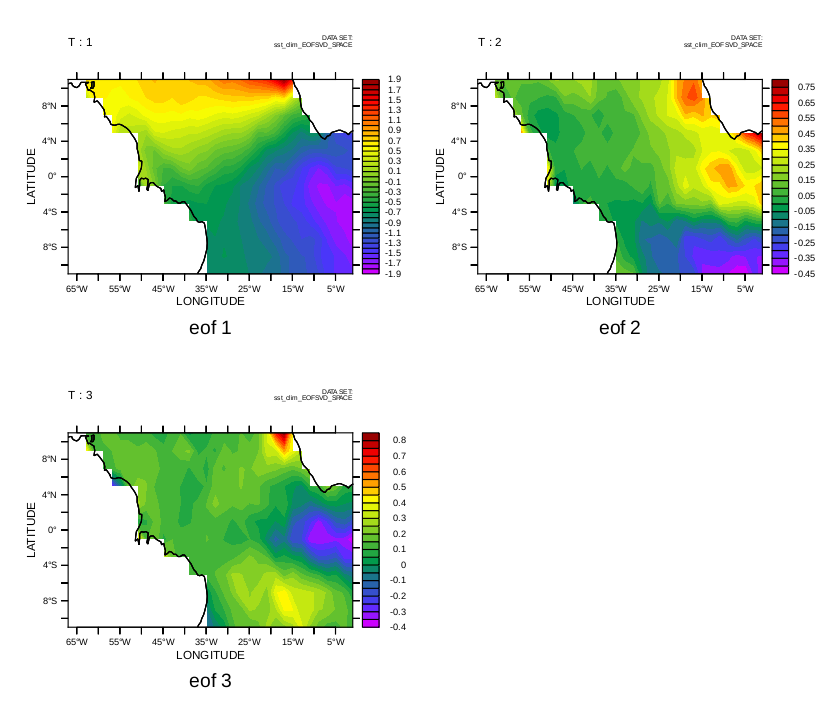

Below is an annotated version of the script ef_eof_demo.jnl
Demonstration of computing EOFs using the External Functions EOFSVD_SPACE, EOFSVD_TFUNC, EOFSVD_STAT
Please see the Ferret documentation for full details and references to the source of these functions.
-
EOFSVD_SPACE returns EOF eigenvectors: spatial EOF in x and y with the same units as the incoming data
-
EOFSVD_TFUNC returns EOF time amplitude functions; dimensionless
-
EOFSVD_STAT returns statistics on the EOF computation: number of EOFs scaled and returned; Percent variance explained by each EOF; and the eigenvalues.
Example 1: Define a function of x,y,time using trig functions. Decompose into spatial and time EOF's and display statistics.
yes? LET time = t[t=1-jan-1990:10-jan-1990:24] ! 24 hour resolution time axis yes? DEFINE AXIS/x=0:10:0.5 x10 yes? DEFINE AXIS/y=0:10:0.5 y10 yes? DEFINE GRID/x=x10/y=y10/t=time g10x10 yes? SET GRID g10x10 yes? LET fcn1 = 15.* sin(omega1*t)*cos(r)/(r+1) yes? LET fcn2 = 20.* sin(omega2*t)*(sin(s)-.2*sin(q))/(s+1) yes? LET r = ((6.*(xpts-x0)^2 + 7.*(ypts-y0)^2)^0.5) yes? LET s = (((xpts-x1)^2 + 2*(ypts-y1)^2)^0.5) yes? LET q = ((3*(xpts-x0)^2 + (ypts-y1)^2)^0.5) yes? LET x0 = 2 yes? LET y0 = 4 yes? LET x1 = 5 yes? LET y1 = 7 yes? LET omega1 = 1/10*2*3.14159 yes? LET omega2 = 2 * omega1 yes? LET sample_function = fcn1 + fcn2 yes? LET xpts = x yes? LET ypts = y
Compute the statistics on the EOF solution. EOF_STAT returns:
- for J=1 the number of EOFs returned
- for J=2 the percent variance explained by each EOF
- for J=3 the eigenvalue for each EOF
yes? LET estat = EOFSVD_STAT(sample_function) yes? LIST/I=1/J=1 estat EOFSVD_STAT(SAMPLE_FUNCTION) X: 1 Y: 1 2.000 yes? LIST/I=1:4/J=2 estat EOFSVD_STAT(SAMPLE_FUNCTION) 2 1 / 1: 93.59 2 / 2: 6.41 3 / 3: 0.00 4 / 4: 0.00 yes? LIST/I=1:4/J=3 estat EOFSVD_STAT(SAMPLE_FUNCTION) 3 1 / 1: 1104. 2 / 2: 76. 3 / 3: 0. 4 / 4: 0.
Plot the original function (averaged over time) and its spatial decomposition by EOFSVD_SPACE
Define some viewports...
yes? DEFINE VIEW/xlim=0.,.33/ylim=.6,1./text=0.2 vul yes? DEFINE VIEW/xlim=.33,.66/ylim=.6,1./text=0.2 vuc yes? DEFINE VIEW/xlim=.66,1./ylim=.6,1./text=0.2 vur yes? DEFINE VIEW/xlim=0.,.33/ylim=.1,.5/text=0.2 vll yes? DEFINE VIEW/xlim=.33,.66/ylim=.1,.5/text=0.2 vlc yes? DEFINE VIEW/xlim=.66,1./ylim=.1,.5/text=0.2 vlr
Plot the functions we used to synthesize the example function
yes? SET VIEW vul; CONTOUR/TITLE="FCN1" fcn1[l=1:10@ave] yes? SET VIEW vuc; CONTOUR/TITLE="FCN2" fcn2[l=1:10@ave] yes? SET VIEW vur; CONTOUR/TITLE="FCN1 + FCN2" sample_function[l=1:10@ave]
Plot the decomposition by EOFSVD_SPACE
yes? LET exy = EOFSVD_SPACE(sample_function, 0.1) yes? SET VIEW vll; CONTOUR/L=1/TITLE="EOF 1" exy yes? SET VIEW vlc; CONTOUR/L=2/TITLE="EOF 2" exy

Now compute and plot the time amplitude functions.
yes? LET etim = EOFSVD_TFUNC(sample_function) yes? SET VIEW ul yes? plot/color=blue/thick/I=1/TITLE=taf1 etim yes? SET VIEW ur yes? plot/color=blue/thick/I=2/TITLE=taf2 etim

Example 2: Using the COADS climatology data.
yes? USE coads_climatology ! Compute and save the spatial EOF functions. These have the same units ! as the data. yes? LET EOF_xyfcn = EOFSVD_SPACE(sst[X=67w:1w,Y=11S:11N]) yes? SAVE/CLOBBER/FILE=sst_clim_EOFSVD_SPACE.cdf eof_xyfcn yes? CANCEL DATA/ALL yes? CANCEL VARIABLE/ALL yes? CANCEL REGION
Plot the first three eigenfunctions
yes? USE sst_clim_EOFSVD_SPACE.cdf yes? SET VIEW ul; fill/l=1/TITLE="eof 1" eof_xyfcn; go land yes? SET VIEW ur; fill/l=2/TITLE="eof 2" eof_xyfcn; go land yes? SET VIEW ll; fill/l=3/TITLE="eof 3" eof_xyfcn; go land

Compute the statistics on the EOFs: number of EOFs scaled and returned; Percent variance explained by each EOF; and the eigenvalues.
yes? USE coads_climatology yes? LET eofstat = EOFSVD_STAT(sst[X=67w:1w,Y=11S:11N]) yes? let nout = eofstat[i=1,j=1] yes? let pcts = eofstat[i=1:`nout`,j=2] yes? let eigenv = eofstat[i=1:`nout`,j=3] yes? LIST nout VARIABLE : EOFSTAT[I=1,J=1] FILENAME : coads_climatology.cdf FILEPATH : /home/users/tmap/ferret/linux/fer_dsets/data/ X : 1 Y : 1 284.0 yes? LIST/I=1:6 pcts VARIABLE : EOFSTAT[I=1:284,J=2] FILENAME : coads_climatology.cdf FILEPATH : /home/users/tmap/ferret/linux/fer_dsets/data/ SUBSET : 6 points (X) Y : 2 2 2 1 / 1: 86.95 2 / 2: 5.82 3 / 3: 3.87 4 / 4: 1.51 5 / 5: 0.56 6 / 6: 0.38 yes? LIST/I=1:6 eigenv VARIABLE : EOFSTAT[I=1:284,J=3] FILENAME : coads_climatology.cdf FILEPATH : /home/users/tmap/ferret/linux/fer_dsets/data/ SUBSET : 6 points (X) Y : 3 3 3 1 / 1: 249.4 2 / 2: 16.7 3 / 3: 11.1 4 / 4: 4.3 5 / 5: 1.6 6 / 6: 1.1
Compute and plot time amplitude functions: Note they are dimensionless.
yes? USE coads_climatology yes? LET eoftime = EOFSVD_TFUNC(sst[X=67w:1w,Y=11S:11N]) SAVE/CLOBBER/FILE=sst_clim_eof_tfunc.cdf eoftime[i=1:`nout`] yes? CANCEL VARIABLE/ALL yes? CANCEL VIEW yes? USE sst_clim_eof_tfunc.cdf yes? SET VIEW ul yes? plot/color=blue/thick/I=1/TITLE="time function 1"/VLIMITS=-2:2:0.5 eoftime yes? SET VIEW ur yes? plot/color=blue/thick/I=2/TITLE="time function 2"/VLIMITS=-2:2:0.5 eoftime yes? SET VIEW ll yes? plot/color=blue/thick/I=3/TITLE="time function 3"/VLIMITS=-2:2:0.5 eoftime